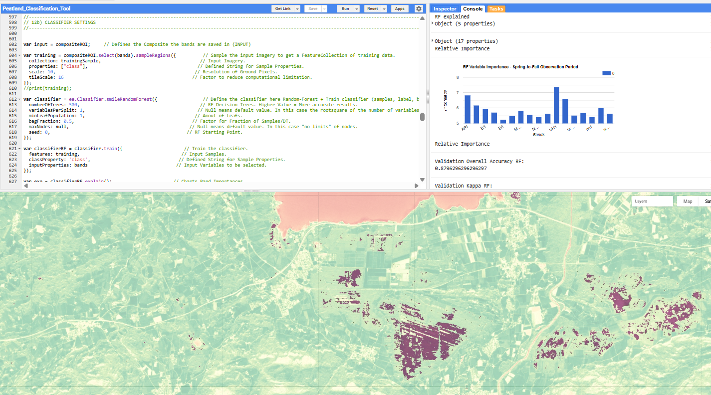
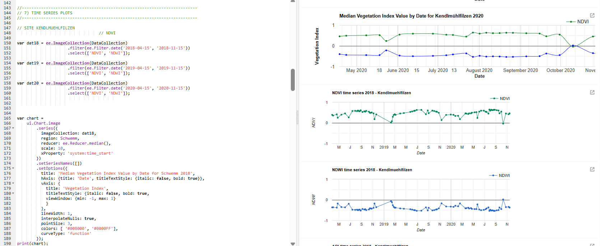

Peatland Mapping & Analysis: Leveraging Google Earth Engine for Alpine Ecosystem Conservation
Project Overview
This project developed and evaluated a novel Google Earth Engine (GEE) approach for mapping peatlands using Sentinel-1 (S1) and Sentinel-2 (S2) satellite data in the Bavarian and North Tyrolean Alps. Covering 965 km² and utilizing machine learning algorithms (Random Forest and Support Vector Machine), I achieved up to 89% classification accuracy in identifying peatland extent. The research specifically examined the effectiveness of different satellite data combinations, compared machine learning algorithm performance, determined optimal seasonal observation periods and explored GEE's capabilities for peatland mapping. The resulting methodology and GEE-Java scripts provide a foundation for future peatland mapping and monitoring efforts, particularly in mountainous regions with extensive forest and grassland coverage.
Technical Approach
My approach combined multiple satellite data sources and advanced processing techniques:
- Sentinel-1 (SAR) Processing: Applied the Refined Lee speckle filter to reduce noise while preserving edges and texture. Implemented orbit filtering, radiometric calibration and orthorectification. Generated VV and VH polarization bands and their ratios. Used border noise removal and thermal noise removal to eliminate sub-swath discontinuities.
- Sentinel-2 (Optical) Processing: Applied QA60 band-based cloud masking and pansharpening of red-edge and 20m bands. Calculated vegetation indices (NDVI, PSRI, ARI, MNDWI, NDWI, EVI), performed principal component analysis and tasseled cap transformation. Used spectral indices to assess vegetation health, water content and senescence patterns.
- Multi-temporal Compositing: Created seasonal composites using median, min, max and mean reducers across three key periods: spring-to-summer (April 15-August 31), fall (September 1-November 15), and spring-to-fall (April 15-November 15). Combined SAR, optical bands and derived indices into an integrated feature stack.
- Machine Learning: Trained Random Forest and SVM classifiers using carefully selected training samples. Optimized parameters through cross-validation. Used binary classification approach to separate peatland from other land cover types.
- Validation: Assessed accuracy using independent validation samples, confusion matrices, kappa coefficients and producer's/user's accuracies. Analyzed variable importance through RF and SVM feature rankings. Conducted visual interpretation against reference datasets to verify classification results.

ML-powered peatland identification pipeline | Random Forest & SVM View Peatland Mapping Code (opens in a new tab)

Custom monitoring tool for tracking peatland health over time View Peatland Monitoring Code (opens in a new tab)
Results & Impact
The project yielded significant results in peatland mapping and monitoring:
- Achieved 89% classification accuracy through the systematic integration of Sentinel-1 and Sentinel-2 satellite data
- Developed an automated monitoring system with 97% accuracy in peatland identification through quantitative vegetation index analysis
- Generated an updated peatland extent map covering 965 km² of the Area of Interest
- Determined statistically optimal monitoring periods, with fall months (September-November) exhibiting maximum detection efficacy
This methodological approach provides conservation managers with empirically validated, scalable solutions for monitoring these vital carbon sequestration ecosystems throughout alpine regions.
Conclusion
This project successfully demonstrated a novel approach for large-scale peatland mapping in the European Alps using open-source resources and cloud computing. The developed methodology achieved exceptional results, with up to 89% accuracy using Random Forest and 80% using SVM classifiers to map peatlands at 10m resolution across 965 km². By leveraging Google Earth Engine's cloud platform and combining Sentinel-1 and Sentinel-2 data with advanced machine learning techniques, I created an efficient and scalable framework for peatland monitoring and conservation. The resulting classification scripts and tools enable rapid updating of peatland inventories and ecosystem health tracking. This work provides conservation managers with precise and automated tools for protecting these vital carbon sinks, with direct applications for environmental policy and climate action. The methodology and custom GEE scripts developed are openly available and adaptable for peatland mapping efforts in other alpine regions globally.